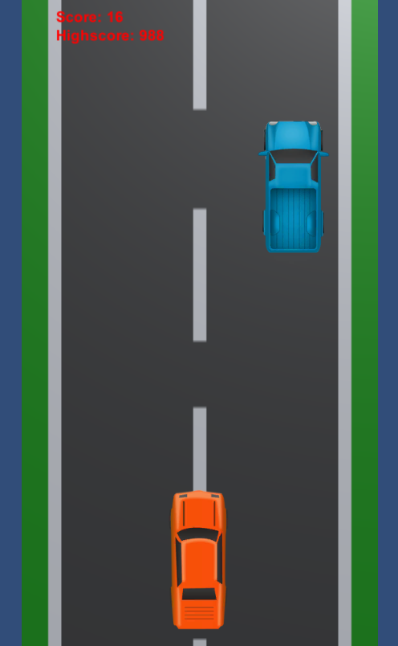

Chicago Coin Speedway
This project was created using Unity and C# scripts. This project is a game that I have made portable to mobile and based on the classic 1969 Arcade game Chicago Coin Speedway. It includes the following features:
Allows a user to drive their car using WASD, arrowkeys or touch controls.
Runs endlessly with infinite enemies.
Has a highscore system.
When a crash occurs goes to the menu and allows the user to play again.
Unity Code Structure:
Assets:
Audio, Sprites: audio or visual elements used in the creation of the physical project.
Scenes: individual parts of the game. For example the game scene and menu scene.
Scripts: C# code scripts applied to Unity objects to perform a function.
Prefabs: a pre-configured GameObject that acts as a template allowing you to create multiple instances of an object in a scene (The enemy truck).
Packages: collections of files and data from Unity projects. Asset packages store multiple assets that can be used.
Project Settings: a config file that stores all of the global setings for how the project works and combines the assets.
Scripts Overview:
CarSpawn.cs: Instantiates enemy cars above the screen with a random horizontal position.
Destroy.cs: Deletes enemy cars at a certain point below the screen for memory.
Enemy.cs: Moves the enemy car down the screen and has a rigidbody to allow for collisions.
Player.cs: Allows the user to control the movement of their car. If it detects a collision with an enemy then it deletes the player car.
Scoring.cs: Loads previous highscore, calculates and sets new highscores.
ScrollBackground.cs: Provides the moving background screen to simulate speed.
UI.cs: Controls the menu with the start button and loads the main scene.
Code View and Development:
Initially I began development with a slightly different set of requirements as to what I wanted the final product to end up as. These included: Horizontal gameplay, recording and giving a score based on the user's position in a race amongst a set of cars, and a fuel system where the user would pick up consumable items.
I soon realised there were issues with my requirements and changed them slightly.
First of all, having the screen be horizontal would be good for ergonomics and match genre leading games (Asphalt 8 + Real Racing 3). However it had unintended consequences as reducing the vertical height of the screen results in a smaller possible reaction time.
Secondly, a score system based on position means that at some point in time the user would inevitably be in 1st place. Once this occurs then some mechanic would need to be introduced to have enemy cars overtake the user or the game would become incredibly monotonous. A simpler solution however would be to score based on the distance the user had driven without a collision.
In creating a Unity 2D game, there are components and scripts. Components include things such as GameObjects which are the fundamental objects in Unity that represent characters, props and scenery. Unity also has colliders, cameras, lighting and physics components for example. Therefore development consists of creating GameObjects, applying components and creating scripts to manipulate these GameObjects.
The first script created was ScrollBackground.cs applied to my background sprite with a renderer component applied.
ScrollBackground.cs//using statements public class ScrollBackground : MonoBehaviour { Renderer rend; public float scrollSpeed = 10.5f; void Start() { rend = GetComponent<Renderer>(); } void Update() { float offset = Time.time * scrollSpeed; rend.material.SetTextureOffset("_MainText", new Vector2(0, offset)); } }
In Unity the Start() method runs once at the beginning of a GameObject()'s lifecycle and in this case initialises the rend variable with the renderer component. The Update() method is called every frame allowing for continous updates. Here we calculate: Distance = Speed * Time and then move our renderer to a new 2-dimensional vector position for the distance travelled.
Once I had implemented this I began to work on allowing the user to move and control their vehicle. Initially I allowed
the user to use the WASD and Arrow keys to move in any direction. I later changed this to only move horizontally to
correspond to mobile inputs. I created a player car GameObject and applied a BoxCollider2D and a RigidBody2D.
A BoxCollider is used for interaction with the 2D physics system for collision. A RigidBody is used for implementing
full 2D physics to the GameObject.
Player.cs//using statements public class Player : MonoBehaviour { public float CarSpeed; Vector2 position; void Start(){ position = transform.position; } void Update() { position.x += Input.GetAxis("Horizontal") * CarSpeed * Time.deltaTime; position.x = Mathf.Clamp(position.x, -2f, 2f); transform.position = position; } void OnCollisionEnter2D(Collision2D col) { if (col.GameObject.tag == "Enemy") { Destroy(gameObject); SceneManager.LoadScene("Menu"); } } }
The Start() method initialises the position of the player car. The Update() method then translates the x position
by getting the current x position and multiplying it by the distance between the last frame and the current one.
The Clamp method is used to keep the player within a certain bound (on the screen) and the car is then moved.
If a collision occurs then OnCollisionEnter2D() is ran with the collision as a parameter. If the player collides with
an "Enemy" object then the player car is destroyed and the Menu scene is loaded.
We now have the background and the player but we need a system for the enemy vehicles for the core gameplay to be complete. To do this an Enemy prefab was created as a template to allow for the creation of multiple instances of enemy GameObjects in a scene. This required 3 scripts:
CarSpawn.cs applied to a point above the screen.
CarDestroy.cs applied to a BoxCollider2D beneath the screen.
Enemy.cs applied to the Enemy prefab along with a Sprite Renderer, BoxCollider2D and RigidBody2D
CarSpawn.cs//using statements public class CarSpawn : MonoBehaviour { public GameObject car; public float DelayTimer; float timer; void Start() { timer = DelayTimer; } void Update() { timer -= Time.deltaTime; if (timer <= 0) { Vector3 CarPos = new Vector3(Random.Range(-2f, 2f), transform.position.y, transform.position.z); Instantiate(car, CarPos, transform.rotation); timer = DelayTimer; } } }
This code is used so that on each frame once the DelayTimer has passed then a new enemy car is instantiated with an x position between -2 and 2 and the current y and z position. The timer is then reset for the next delay between enemy car spawning.
CarDestroy.cs//using statements public class CarDestroy : MonoBehaviour { void OnCollisionEnter2D(Collision2D col) { if(col.gameObject.tag == "Enemy") { Destroy(col.gameObject); } } }
Simply put when a collision occurs between the BoxCollider2D beneath the screen then if the colliding object is an "Enemy" then destroy the enemy. This helps to prevent the increase of GameObjects as the game runs meaning the performance should be constant no matter the length the game is running for.
Enemy.cs//using statements public class Enemy : MonoBehaviour { public float Speed; private Rigidbody2D rb; void Start() { rb = GetComponent<Rigidbody2D>(); } void FixedUpdate() { rb.velocity = Vector2.zero; rb.velocity = new Vector2(0, Speed * Time.fixedDeltaTime * -1); } }
The Start() method initialises the rb variable with the RidigBody2D component. The FixedUpdate() method is called at fixed intervals and used for physics related updates. The first line resets the velocity to zero so that the enemy's movement is controlled solely by this script. The velocity is then set to this distance in the negative y distance.
The final things to implement are the menu system and the highscore system. These should allow the user to replay the game using the menu and for their highscore to be saved. This is done with two scripts Scoring.cs and UI.cs and the Menu scene.
Scoring.cs//using statements public class Scoring : MonoBehaviour { public Text ScoreText; public Text HighScoreText; public int Score; public int HighScore; public int ScoreChange = 4; void Start() { if (PlayerPrefs.HasKey("HighScore")) { HighScore = PlayerPrefs.GetInt("HighScore"); } Score = 0; InvokeRepeating("ScoreUpdate", 0.5f, 0.25f); } void Update() { if (Score > HighScore) { HighScore = Score; PlayerPrefs.SetInt("HighScore", HighScore); } ScoreText.text = "Score: " + Score; HighScoreText.text = "Highscore: " + HighScore; } void ScoreUpdate() { Score += ScoreChange; } }
The Scoring.cs script is applied to a UI Element in the top left of the game scene. This has Score: and Highscore: text elements.
Start(): Loads the "HighScore" from the PlayerPreferences Unity folder. Invokes the ScoreUpdate() method at regular intervals.
Update(): Runs once per frame and updates the displayed score and highscore and saves the highscore if the current score exceeds it.
ScoreUpdate(): Called at regular intervals to increment the score.
Finally the UI.cs script is applied to the Menu scene to allow for traversing from the Menu scene to the Game scene.
UI.cs//using statements public class UI : MonoBehaviour { public void StartGame() { SceneManager.LoadScene("Main"); } }
Gameplay and Screenshots:
